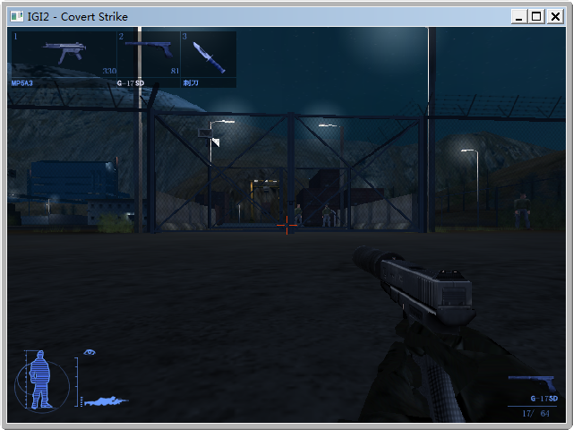
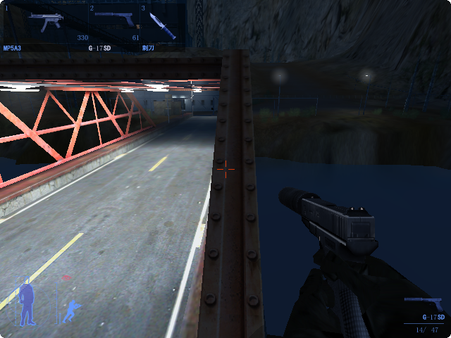
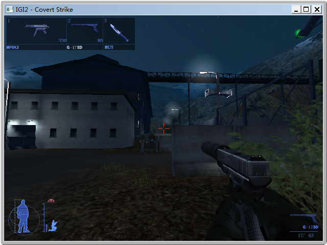
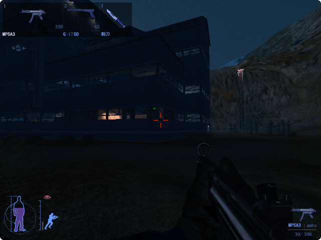
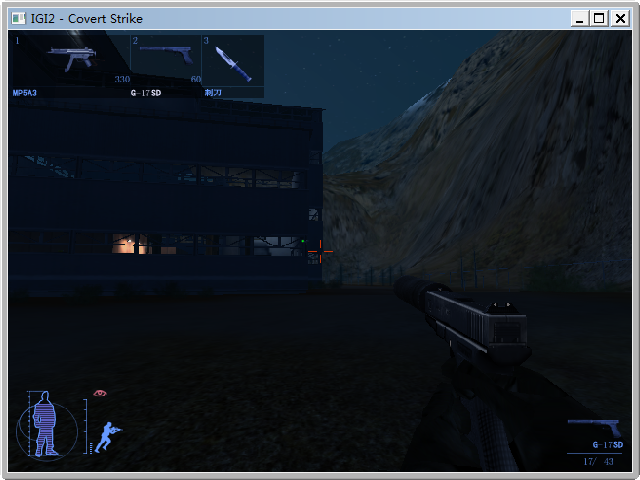

此处已经介绍了第一关潜入的攻略方法。以下介绍从大门正面突破的流程攻略。
此路线颇难，你要注意以下方面：
开始游戏后，绕到此处大门，蹲下并用消声武器干掉三个守卫。
先干掉距离警报按钮最近的守卫，再陆续干掉旁边的守卫和巡逻的一个守卫。 按T可以看守卫的位置和活动。
不要让任何一个守卫按报警按钮，打死按钮旁的守卫以后，附近的守卫有两种行动模式：

都干掉以后，钻进左侧的箱子堆沿着边上走，从此处进入主营地。

一路沿着左边的铁丝网走，来到集装箱的洞。
潜行至此处草丛蹲下埋伏，等摄像头转过去以后，打爆摄像头，随即用消声武器朝距离报警按钮最近的那个守卫射击。

通过大桥来到对面的铁栅栏门前，观察上方摄像头，趁摄像头转过去的时候，用消声武器打爆摄像头，迅速调转枪口打死距离报警按钮最近的守卫，再打死另一个守卫。这里守卫的行动模式也和大门处的守卫一样，不要让他们按警报按钮。

打死两个守卫后，打开铁栅栏门，不理会哨所小屋，朝2号建筑物的方向前进，中途要注意此处的摄像头，不要靠的太近，绕过去。

经过2号建筑物的西门以后的攻略流程如此处所述。这里就不再介绍。